Marp - the first ten minutes of a B2B revenue analytics product, from a sign-up on a phone to a working dashboard on a desktop, with an AI that drafts the setup and a person who decides what stays.
Self-initiated concept project · 2026
02 / THE PROBLEM
A PRODUCT NOBODY SETS UPIS A PRODUCT NOBODY USES.
Product teams in B2B SaaS live around one number: activation - the moment a new account first gets real value. For an analytics product that moment is concrete. It is the first dashboard showing the customer's own numbers. Everything before it is a cost the customer pays.
Two things make that stretch harder than it looks.
- The work is split across devices. A sign-up often starts on a phone - a link in an email, a recommendation in a chat. The setup that follows, connecting billing data and checking how it is read, is table work. Most onboarding either forces all of it onto one screen or loses the person somewhere between two.
- The AI is fast, and revenue is unforgiving. Products now propose a setup automatically. That removes the blank page - and adds a new risk. A wrong MRR on day one is not a small bug. It is the moment a finance lead stops trusting the product.
Marp is designed around both. The phone handles what fits a thumb, the desktop handles what needs a table, and the move between them is a designed step, not an accident. The AI writes the first draft of the setup. The person approves it, one part at a time.
03 / THE SYSTEM
BLACK AND WHITE BY DEFAULT.COLOUR ONLY WHEN IT MEANS SOMETHING.
The design system came before the first screen: 31 documentation pages - colour, type, spacing, grids and layout shells - and 21 components with every state rendered rather than described.
The palette is almost entirely neutral: a light canvas, white and light-grey surfaces, and one dark panel per screen. Against that, two accents carry fixed meanings and nothing else.
- Lime means progress. Progress bars, completed steps, the current bar in a chart, the setup ring. It is the product's one signal for "done" and "moving forward".
- Violet means AI. The accent, badge and confidence meter shared across every case study in this portfolio. If something on screen is violet, a model produced it.
Five rules held on every screen.
- Lime is a fill, never a word. On white it measures 1.52:1. Positive numbers use a dark ink green at 5.44:1 instead, and lime never appears as text, a thin line or an icon on a light surface.
- One dark panel per screen. It holds the single thing the screen is about - the promise on sign-up, the MRR chart on the dashboard. A second one would compete with it.
- Hierarchy through size, not weight. Two weights only, 400 and 500, and tabular figures for every number, so values in a column line up.
- Colour follows meaning, not direction. Net revenue churn falling is shown in green with a down arrow. A red down arrow would be accurate and wrong.
- Status is a dot and a word. Connected, syncing, failed and skipped are always labelled - colour alone never carries a state.
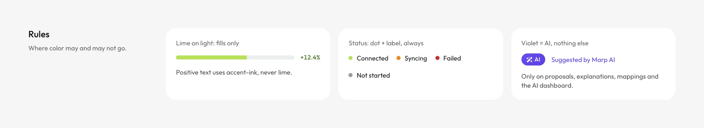
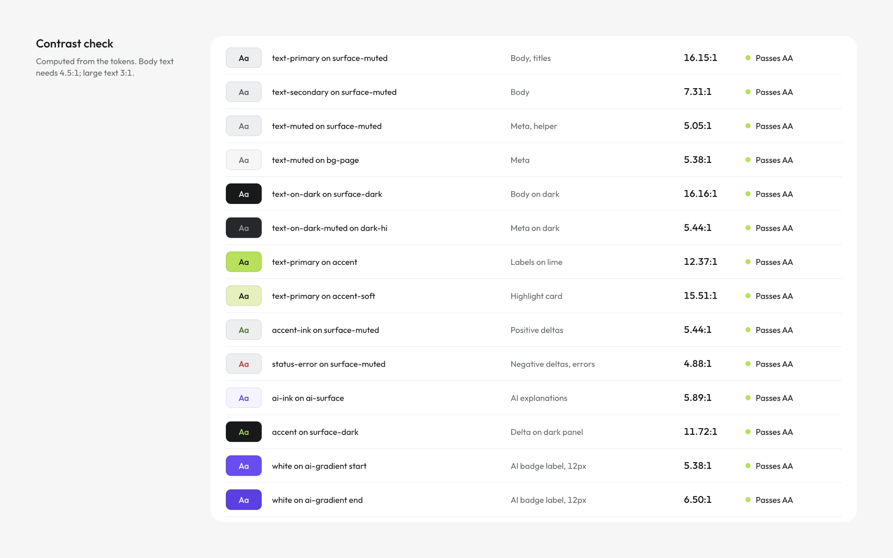
The system has two shells, and the difference between them is the product's structure. The setup shell has no navigation at all - only a rail of six steps, each carrying its result once done: "Goal · Revenue", "Adjust mapping · 8 of 9 columns". The app shell appears for the first time on the dashboard. Until then, there is nowhere to wander off to.
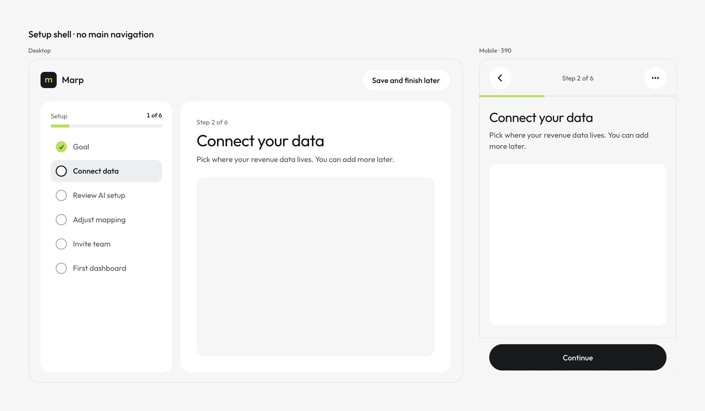
The component the whole case depends on is the AI proposal card. Its rules are strict: a badge; a confidence written as a word with a three-segment meter, never a bare percentage; a "why this" line that names its sources as links; and accept, edit and dismiss visible together at all times.
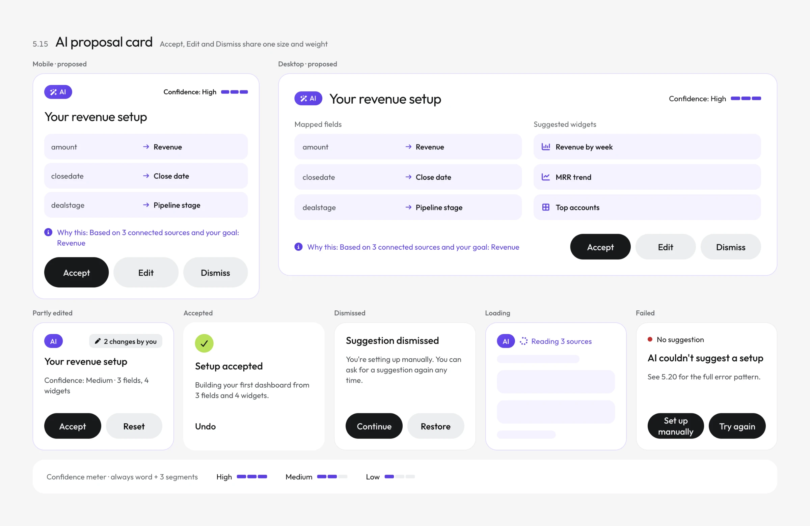
04 / SIGN UP
TWO FIELDS.NO PASSWORD.
The first screen asks for a name and a work email, and nothing else. There is no password: Marp sends a six-digit code. On an iPhone the code arrives in Mail and the keyboard offers it in a single tap. Google and Microsoft sign-in sit above the form, because that is where business identity lives; consumer logins would only add choice.
The dark panel does not carry a testimonial. It carries the plan: a first dashboard in about ten minutes, in three steps. Telling someone how long a task takes is part of getting them through it - a person who knows the setup is ten minutes long is less likely to give up at minute four.
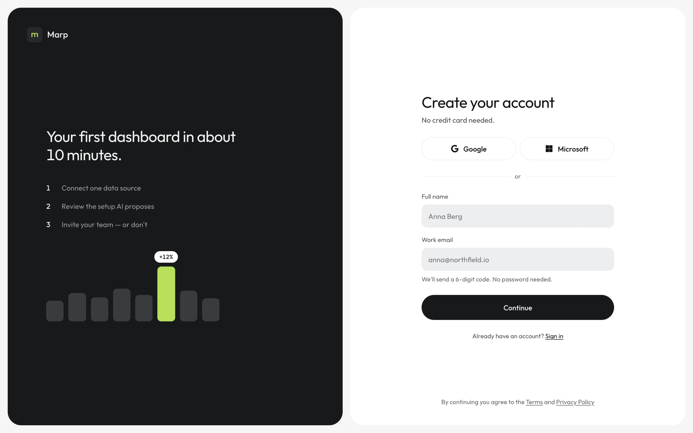
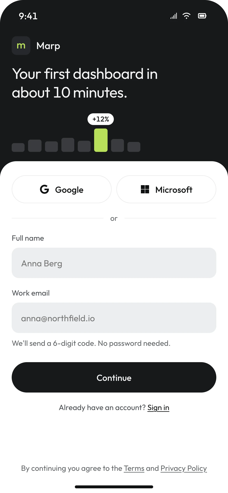
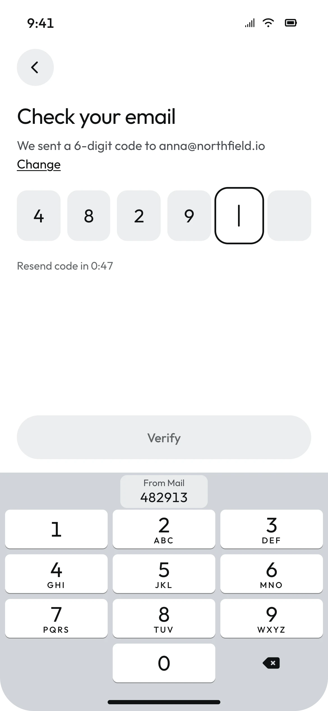
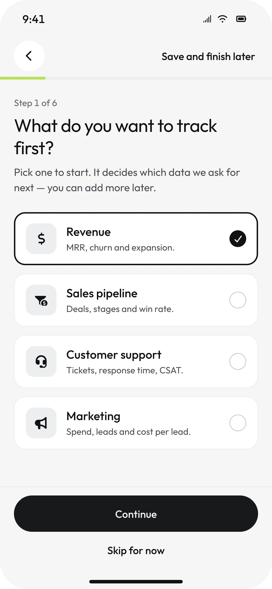
Then the first real question: what do you want to track first? Four goals, one choice. It is not a survey - it decides which data Marp asks for next. Choosing Revenue puts Stripe, Chargebee, Paddle and Google Sheets at the top of the following screen.
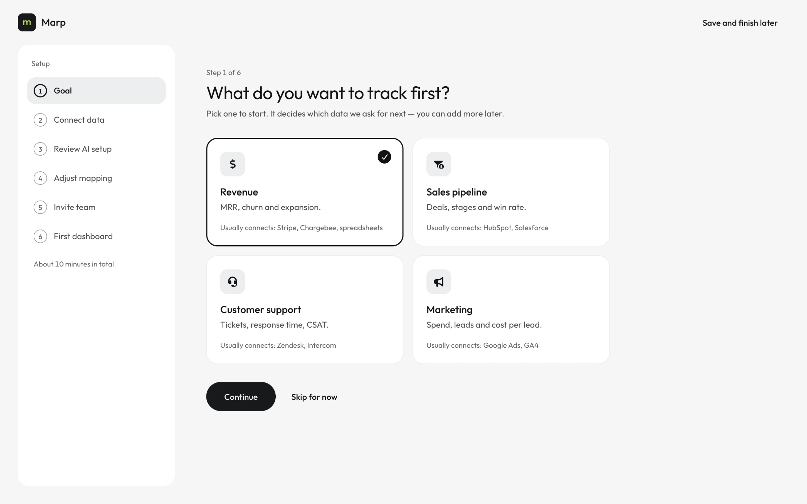
05 / CONNECT
SAY WHAT YOU WILL READBEFORE YOU ASK TO READ IT.
Sources are ordered by the goal from the previous screen, not alphabetically. The primary button names the selected source - "Connect Stripe" - so nobody has to check what they are about to agree to.
Between that button and Stripe's own sign-in sits a screen most products skip. It lists what Marp will read and, separately, what it will never do: create or change charges, move money, see full card numbers. Test data is excluded by default, so the first numbers are not polluted by test payments.
A permission screen is usually a legal formality. Here it is the first moment of trust in a product that will read a company's revenue. Stating the limits before the request, in plain words, costs one screen and answers the question every finance lead asks first.
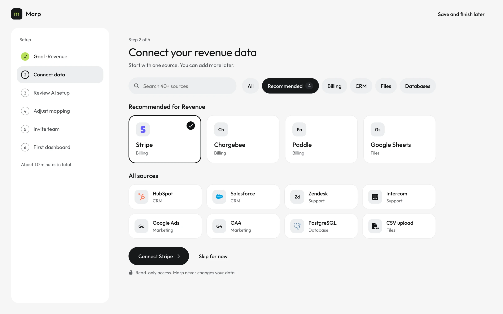
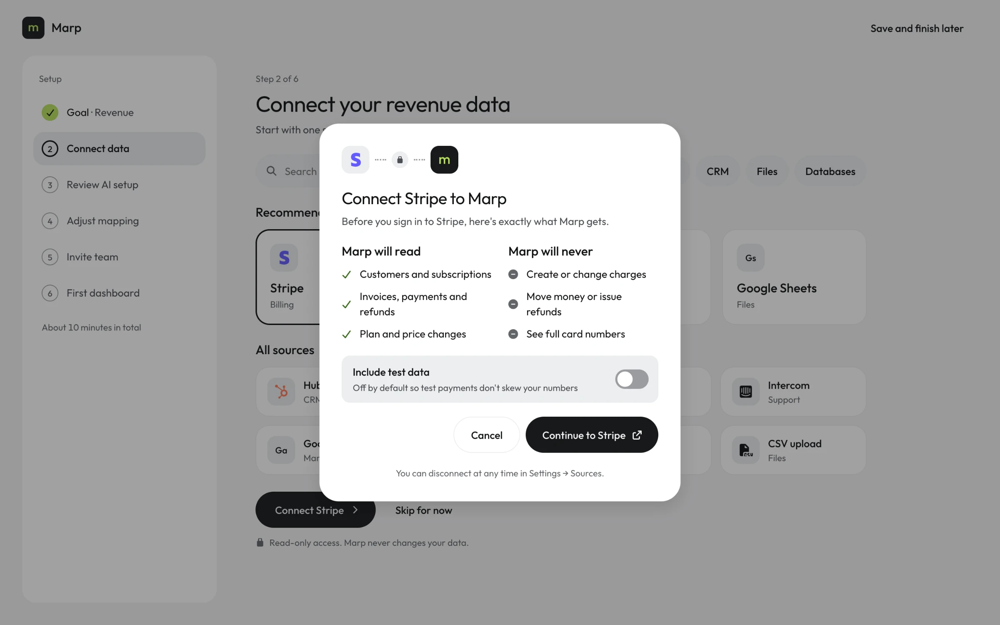
Back in Marp, the import runs - 4,210 of 12,480 records, about three minutes left - and "Continue to review" is already enabled. Waiting for a sync is the most common dead minute in any setup. Here the numbers fill in while the person moves on.
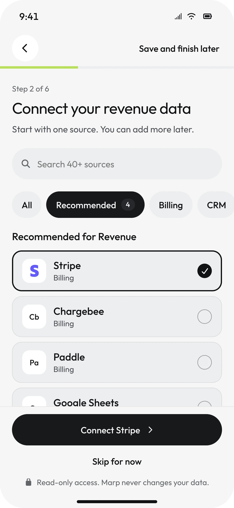
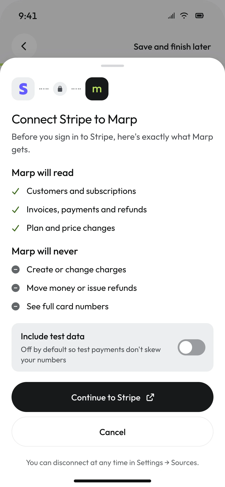
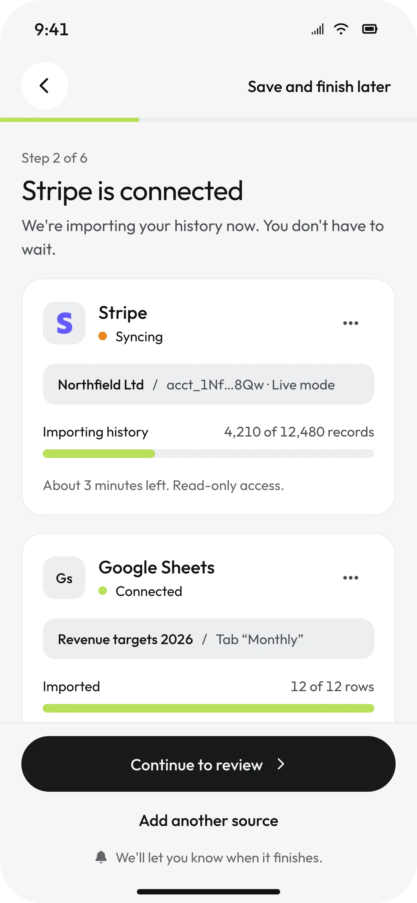
06 / AI
THE MODEL DRAFTS THE SETUP.THE PERSON SIGNS IT OFF.
From 12,480 Stripe records and a targets sheet, AI proposes five metrics and how each is calculated - MRR with annual plans divided by twelve, net revenue churn, expansion MRR, new customers, and revenue against target. What it detected is shown as plain chips: monthly and annual plans, two currencies, test data excluded, a fiscal year that starts in January.
Three rules hold everywhere the AI appears.
- It is labelled and quantified. Violet, the word AI, and a confidence written as a word with a meter. Colour alone never signals that a model produced something.
- It shows its working. Confidence is given per metric, not once for the whole setup. Four metrics are High. One is Medium, and says why.
- It never decides. Accept, edit and set up manually are visible side by side at all times. Nothing is applied until a person accepts it.
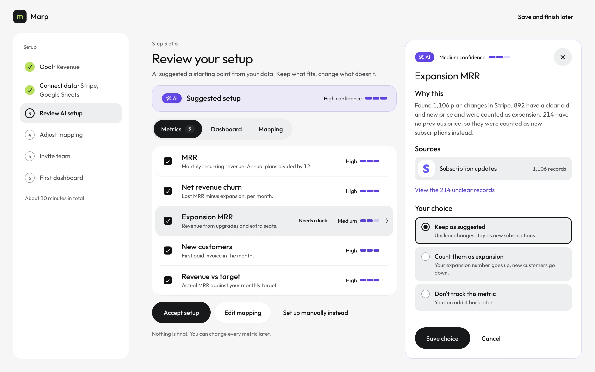
The Medium one is expansion MRR. Opening it shows the reasoning: 1,106 plan changes found, 892 with a clear old and new price, 214 without a previous price and therefore counted as new subscriptions. The 214 are a link to the records, not a number to take on faith. Three choices follow, each with its consequence written beside it - "your expansion number goes up, new customers go down".
A setup where the AI is certain about everything is not believable, and it teaches people not to check. One honest Medium, with its evidence and its trade-off, is what makes the four Highs credible.
After two edits the screen changes its own language. Human changes are never violet - they are neutral, marked with a pencil, and counted: "2 changes by you". The primary button now reads "Accept setup with 2 changes", so the person accepts exactly what they are looking at.
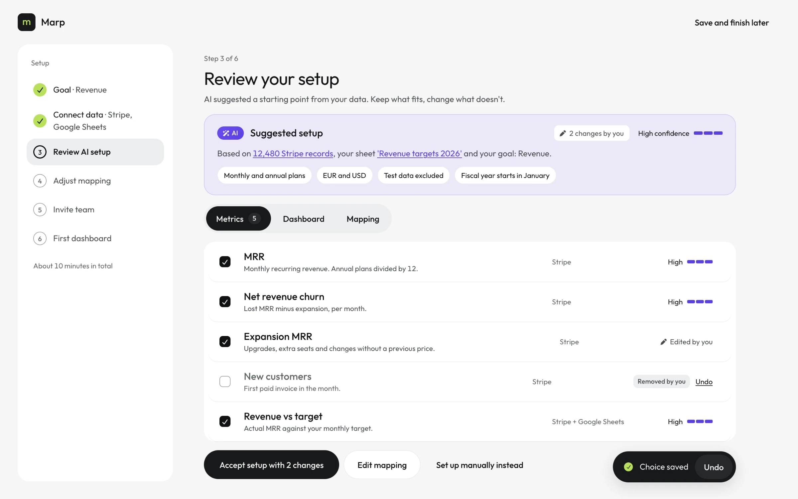
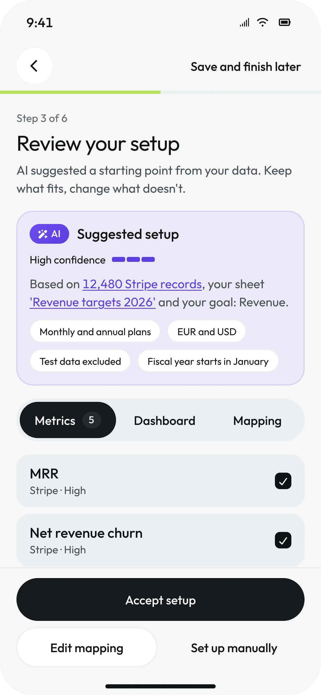
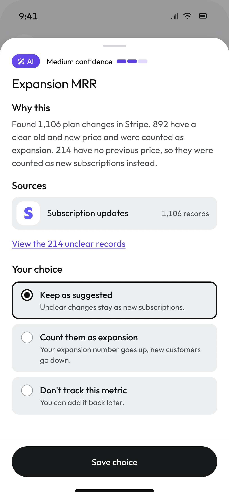
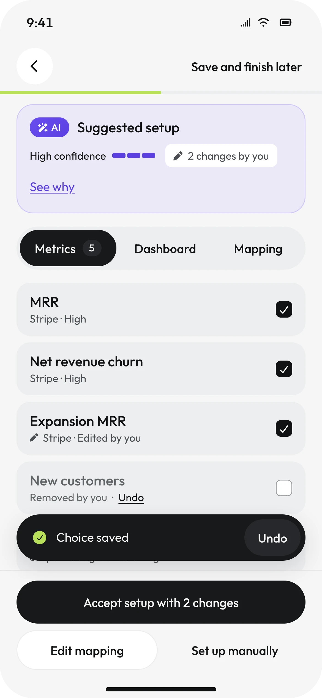
Confidence is only useful if it is sometimes low.
07 / MAPPING
SHOW THE RAW DATA.SHOW WHAT IT CHANGES.
This is the only desktop-only step, on purpose. Checking how nine Stripe columns feed Marp's fields is table work, and a phone would turn it into a scroll through cards.
Every column header carries two lines: the raw Stripe name, and the Marp field it maps to, with an AI mark where the model chose it. Seven columns are mapped, one is not used, and one - quantity - needs a look. The confirm button stays disabled until it gets one, with the reason written next to it: "Check 1 column first".
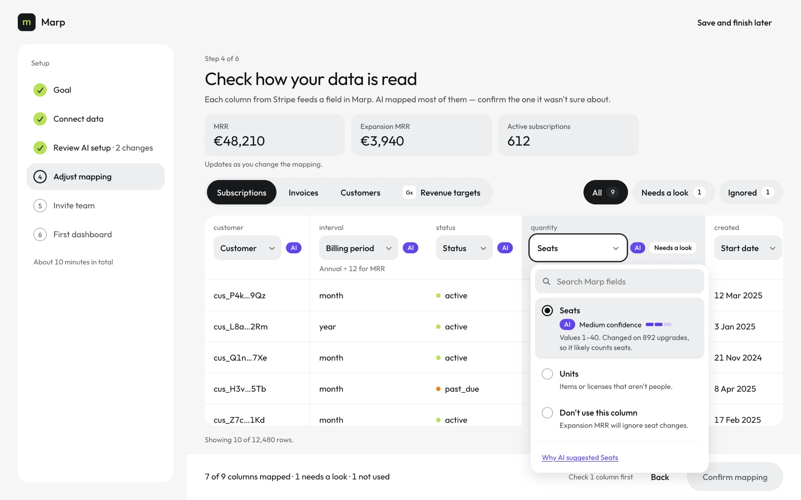
The field menu is a single choice. The reference pattern this screen started from used toggles, which let one column feed several fields at once - a mapping error the interface itself invites. A column maps to exactly one thing, and the control says so.
Above the table, three numbers recalculate from the current mapping. Keeping quantity as seats moves expansion MRR from €3,940 to €4,310, and the tile says where the €370 came from.
Mapping screens usually ask people to judge columns in the abstract. Showing the effect on the numbers they care about, before they confirm, turns a technical question into a business one they can actually answer.
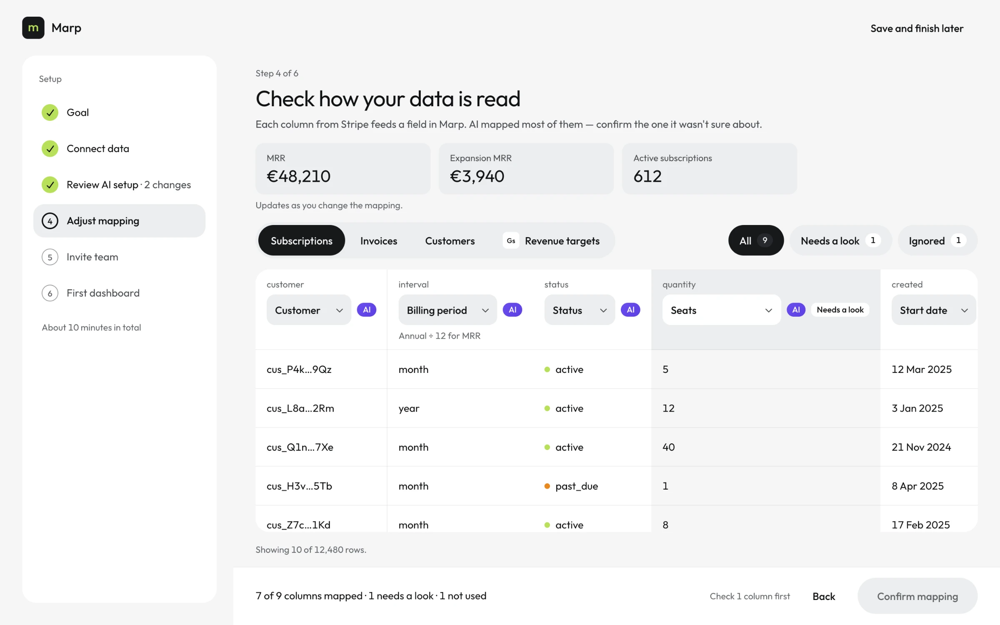
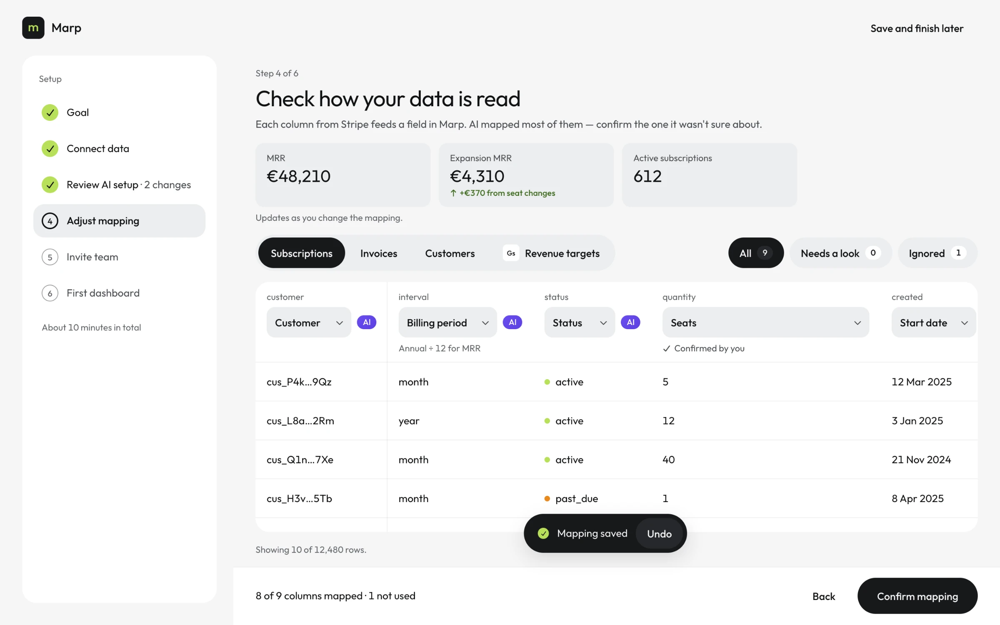
08 / TEAM
ONE FIELD, ONE LIST.AND A WAY TO SAY NO.
Inviting colleagues is optional, and the screen says so before anything else: "You can do this later." One combined field takes an email and a role; several emails can be pasted at once.
The default role is Viewer - the least a new person can do. Each role carries one line describing it, so nobody has to guess what "Editor" allows.
A mistyped domain is the quietest way for an invite to disappear. When lena.hoffmann@northfiled.io does not match the workspace's own domain, the row says so and offers the fix - "Did you mean @northfield.io?" - before anything is sent.
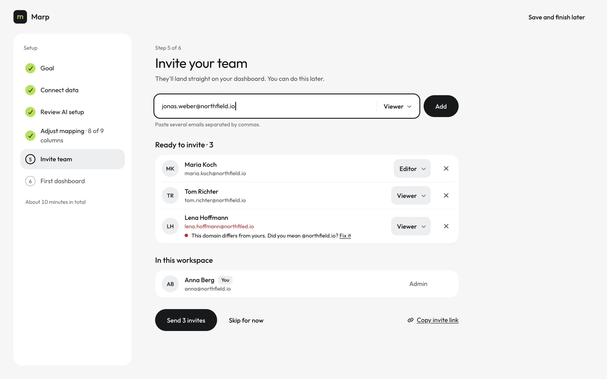
The success state is the one expressive moment in the setup: the person at the centre, the three invitees on the rings around them. It is built only from the system's own avatars and icon buttons - no illustration, no confetti, no gradient - and it does not move. The team is the picture.
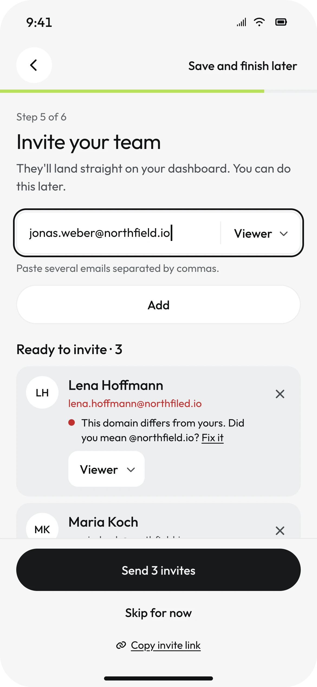
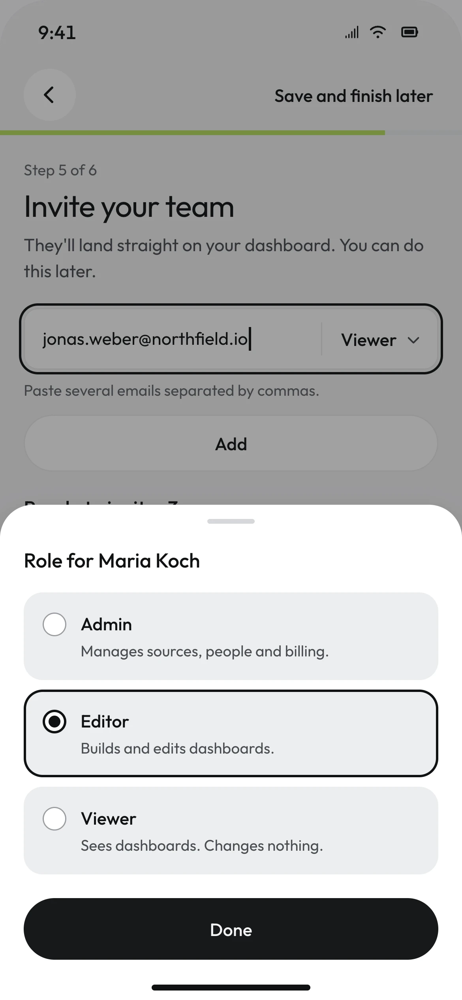
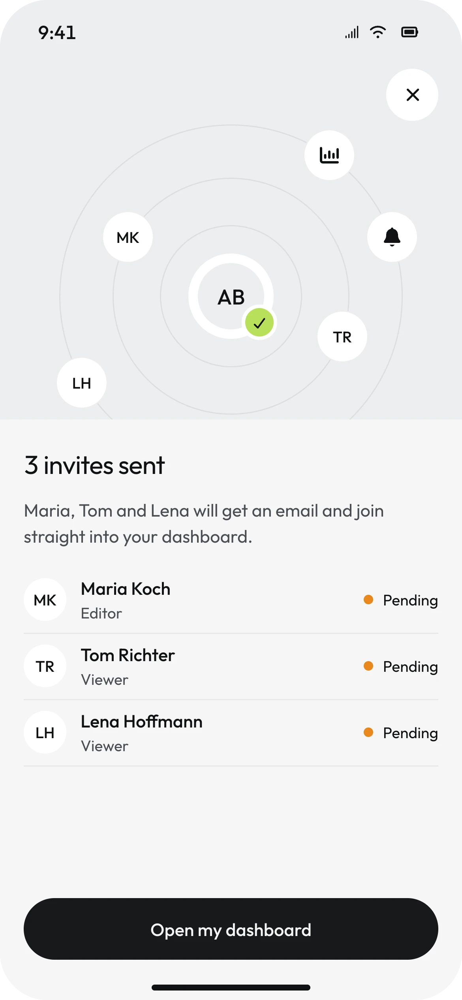
09 / HANDOFF
THE PHONE SCANS.THE DESK OPENS WHERE YOU STOPPED.
On a phone, the mapping step does not open. Instead the screen says why - mapping works best on a bigger screen - confirms that progress is saved at step 4 of 6, and offers the move: open marp.app/go on the computer and scan the code.
It also offers a way to stay. "Keep AI mapping and continue" lets the person finish on the phone with the model's mapping, and says what that leaves behind: one column still needs a look. The desktop is recommended, not enforced.
The first version of this screen was designed the wrong way round: the phone showed a QR code for the laptop to read. Nobody points a laptop camera at a phone. The code now lives on the desktop page and the phone scans it - the pattern people already know from messaging apps - and the system's handoff component was rewritten to match.
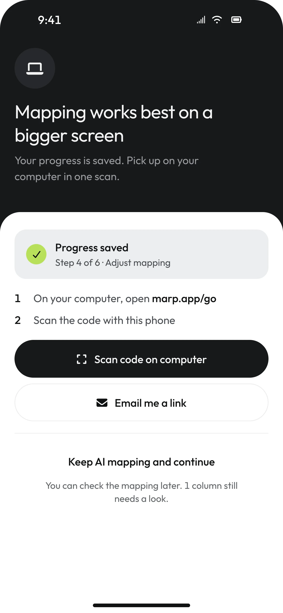
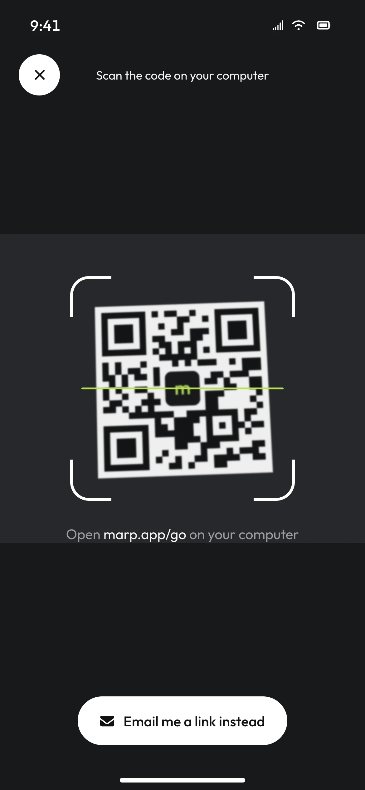
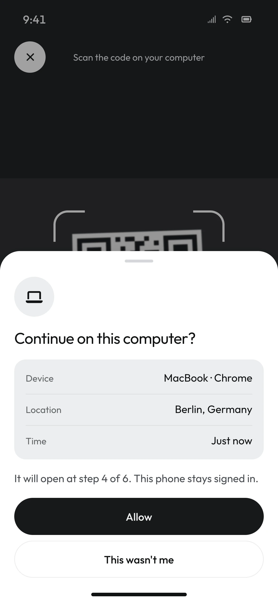
Moving a signed-in session to another device is a security event, so the phone asks before it happens: which device, which browser, where, and when. "This wasn't me" is as large as "Allow". The desktop opens at step 4, says "Picked up from your phone", and a toast offers "Not you?" one more time.
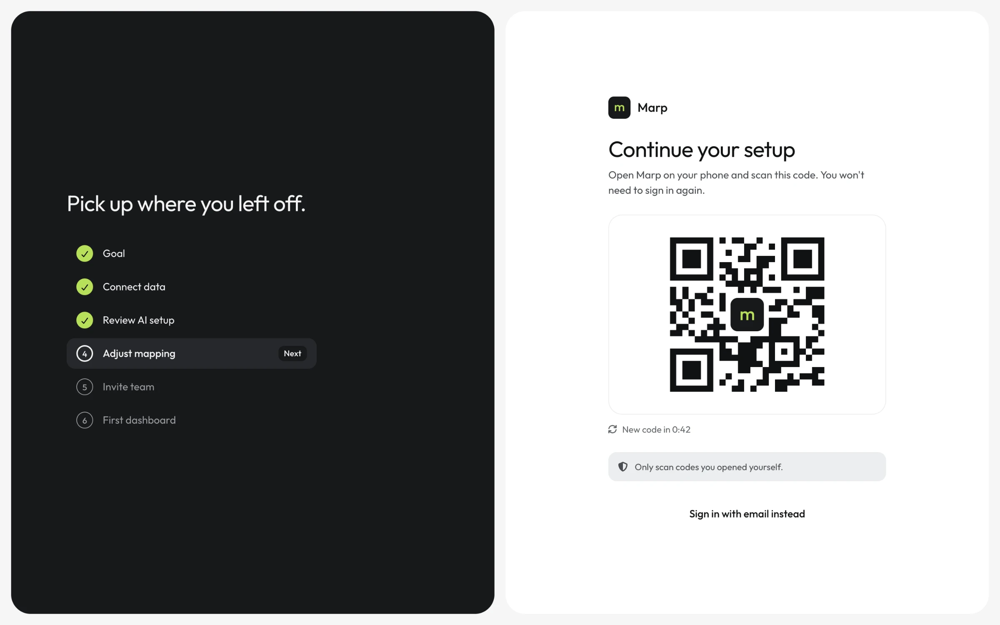
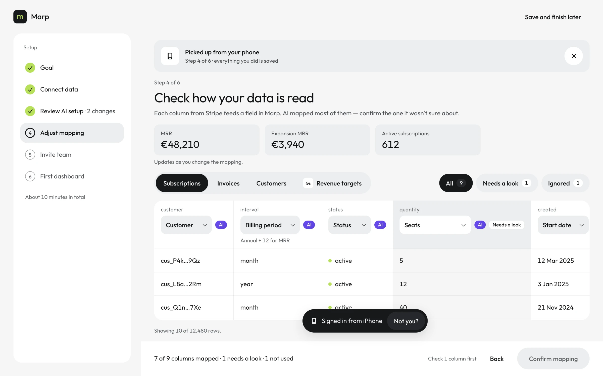
10 / THE RESULT
THE FIRST DASHBOARDSHOWS THE CUSTOMER'S OWN NUMBERS.
This is where activation happens, and it is the first time the app's navigation appears. The dashboard is not a template. It is built from the setup the person approved - "Built from your setup" links back to it - and every figure agrees with the earlier screens: MRR €48,210, expansion €4,310 after the seat mapping. The metric the person removed in step 3, new customers, is not here.
The one dark panel holds the one chart that matters - twelve months of MRR with the current month in lime - and September against the target from the person's own sheet: 96%, €48,210 of €50,000.
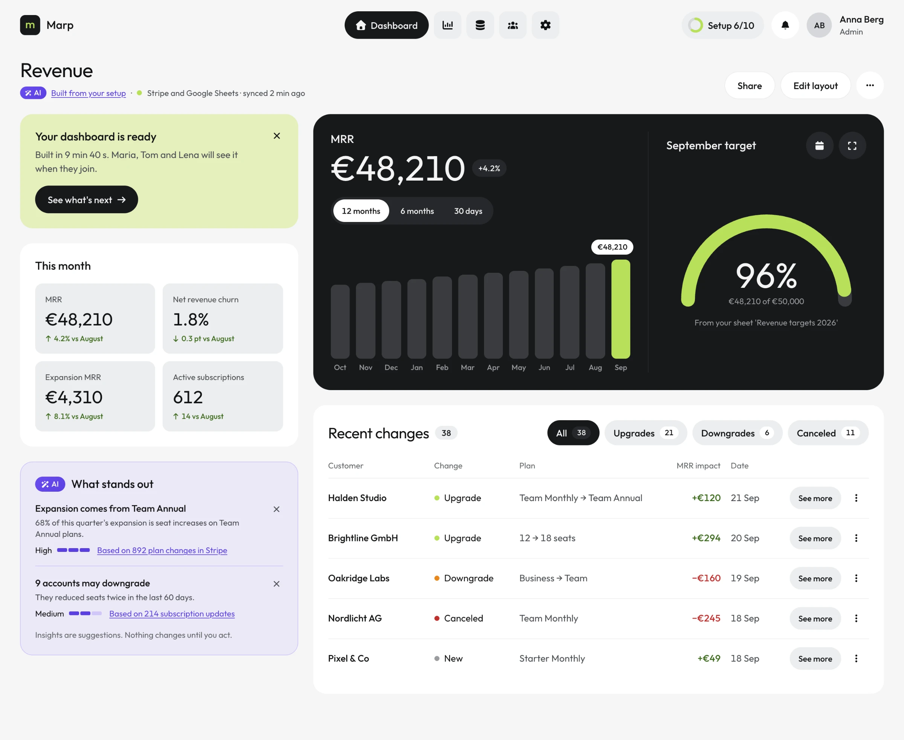
Two AI insights sit apart in their own violet card, and they differ in confidence: expansion driven by seat increases on Team Annual (High, based on 892 plan changes) and nine accounts that may downgrade (Medium, based on 214 updates). Both link to their evidence. The card ends with one line: insights are suggestions, nothing changes until you act.
A lime card closes the loop opened on the very first screen - "built in 9 min 40 s" - and points to what's next, not to a celebration.
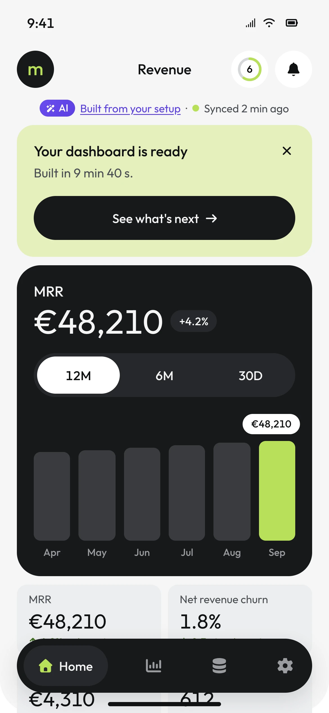
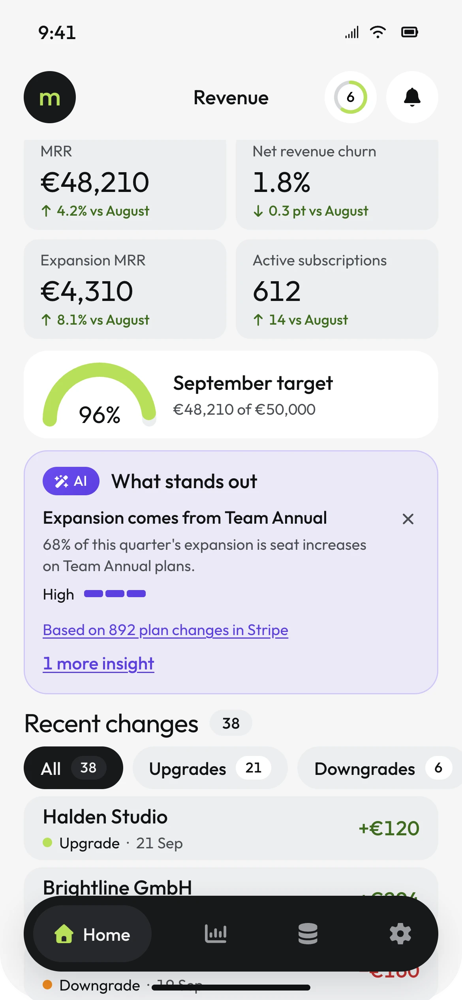
11 / WHAT'S NEXT
THE REST OF THE SETUPWAITS BESIDE THE WORK.
The checklist could have been a modal. It isn't, because a centred modal would cover the dashboard the person has just earned - and a checklist is not a decision, it is a list for later.
On desktop it is a side panel with no scrim: the numbers stay visible and usable beside it. On mobile it is a bottom sheet. Closed, it does not disappear - a small ring in the header reads "Setup 6/10" and stays until the last item is done.
Every step state the system defines appears here, each as an icon and a word: current, upcoming, blocked, skipped, done. HubSpot is blocked and says why - it needs admin access. The second billing source is skipped and says where - in step 2. Finished items carry facts instead of praise: "Stripe and Google Sheets", "2 changes by you", "Built in 9 min 40 s".
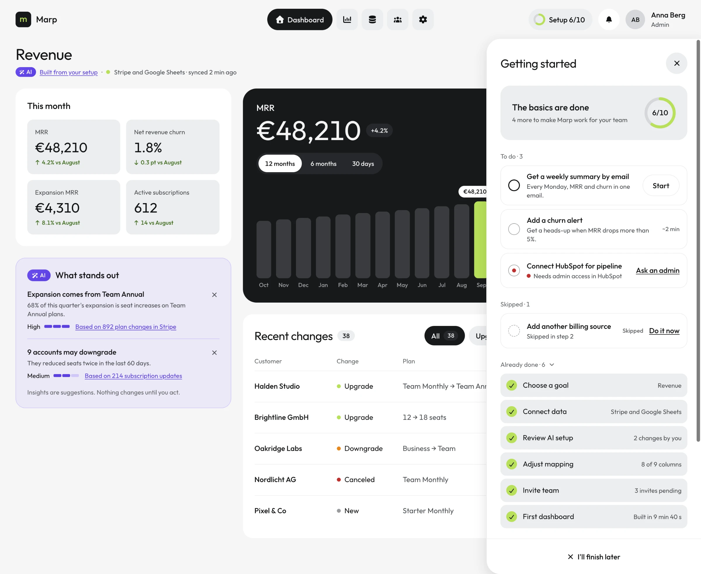
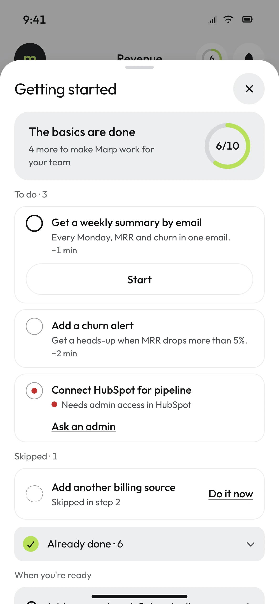
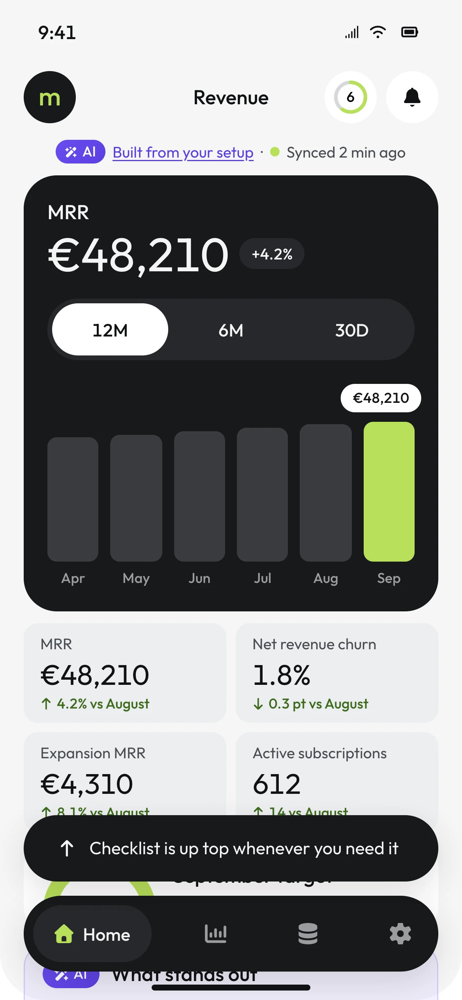
The reference for this screen had a dark progress card. It was made light, because the dashboard behind it already holds the screen's one dark panel.
12 / WHEN IT BREAKS
EVERY ERROR SAYS WHAT HAPPENED,WHY, AND WHAT STILL WORKS.
Three things realistically break during activation, and each follows one pattern: what happened in a short headline, why in a sentence or two, what is still fine, and a real way forward. No "Oops", no red banners, no single OK button. Red appears only as a status dot with a word next to it.
The most important of the three is the AI failing.
When AI cannot propose a setup, most products show an apology and a small link to "set up manually". In Marp the reason is specific - 1,940 payments, only 212 linked to a subscription, 11% - so any MRR would be a guess, and the screen says exactly that. The manual path is the primary button, and first on mobile. Helping the AI try again is the alternative, in its own violet card. A model's failure is never the person's only option.
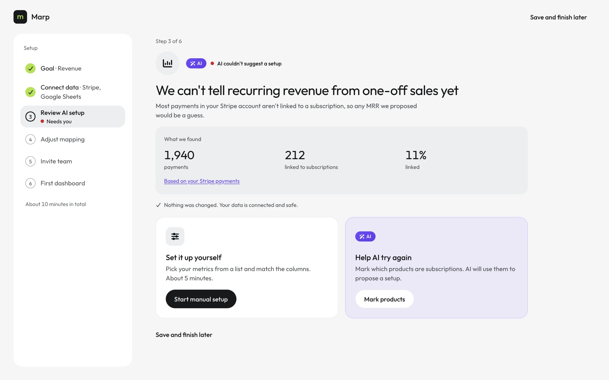
A failed Stripe sign-in names the usual cause - the window closed early or took too long - keeps the error code inside a collapsed "Details" with a copy button for support, and offers three exits: try again, choose another source, contact support. A missing HubSpot permission continues the blocked checklist item: it names the person's actual role, "Sales user", and drafts the request to an admin, ready to edit and send.
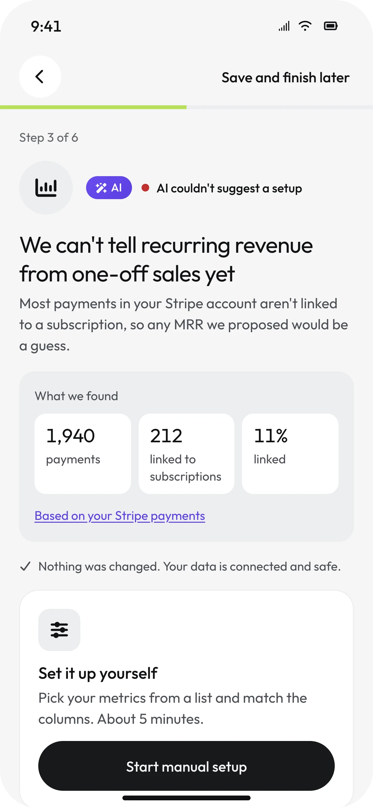
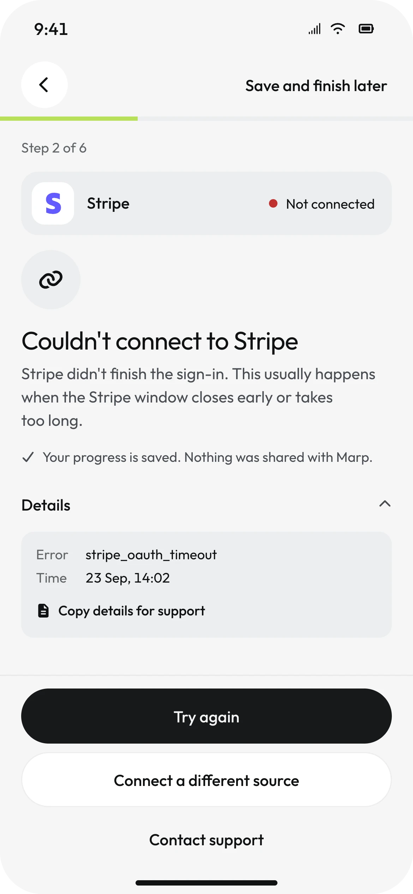
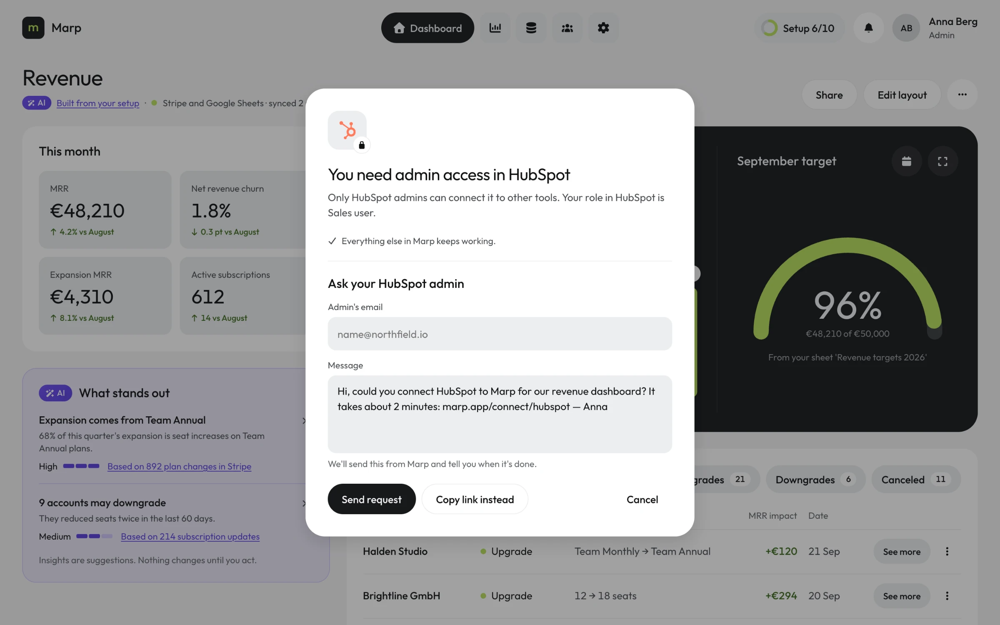
13 / WHAT WAS TESTED
NOTHING WAS TIMED.SO NOTHING IS CLAIMED.
There is no usability test behind this case study yet. "About ten minutes" on the first screen is a design target, and "built in 9 min 40 s" on the dashboard is interface copy - neither is a measurement, and neither is reported as one. What the case does have is a heuristic evaluation, counts taken from the designed flow, and contrast ratios computed from the tokens.
Heuristic findings that changed the design
| Heuristic | Finding and change |
|---|---|
| Match with the real world | The first handoff put the QR code on the phone. Reversed: the desktop shows the code, the phone scans it and confirms the sign-in. |
| Consistency and standards | The mapping menu started as toggles, which let one column feed several fields. Replaced with a single choice. |
| Error prevention | An invite to a mistyped domain would fail silently. Added a domain check with a one-tap fix. |
| User control and freedom | When AI failed, the manual path was a secondary link. Made it the primary action; every AI edit got an Undo. |
| Visibility of system status | Closing the checklist made it disappear. Added the "Setup 6/10" ring that stays until the list is done. |
Measured on the designed flow
| Measure | Result |
|---|---|
| Typed fields before the first dashboard | 2 - name and work email (0 with Google or Microsoft) |
| Taps on the shortest path | 13 on desktop, excluding Stripe's own sign-in |
| Steps that need a desktop | 1 of 6 - and it can be skipped |
| AI outputs without a visible source | 0 |
| Error states without a way forward | 0 |
Verified contrast · computed from the tokens
| Pairing | Ratio | Result |
|---|---|---|
| Primary text on muted surface | 16.15:1 | Pass |
| Secondary text | 7.31:1 | Pass |
| Muted text, smallest allowed | 5.05:1 | Pass |
| Positive ink green | 5.44:1 | Pass |
| Error red | 4.88:1 | Pass |
| AI ink on AI surface | 5.89:1 | Pass |
| Lime on the dark panel | 11.72:1 | Pass |
| Black text on lime | 12.37:1 | Pass |
| White label on AI badge | 5.38–6.50:1 | Pass, after fix |
| Lime on white | 1.52:1 | Restricted to fills |
Two results failed on the first pass, and they were handled differently. Lime on white, at 1.52:1, could not be fixed without changing what lime is - so it was restricted to fills. The white label on the AI badge measured 2.72:1 and 4.35:1 against the original gradient, below 4.5:1 for 12px text. That one was fixed rather than restricted: the gradient now runs from #6A4CF0 to #5B3FE0, re-measured at 5.38:1 and 6.50:1, and every screen was re-exported with it.
14 / LIMITS
WHAT THIS IS,AND WHAT IT ISN'T.
This is a self-initiated concept project, not a shipped product. No customers, no real Stripe account, no production data. Northfield Ltd, its people and its revenue are invented.
What that means in practice:
- Nobody has been timed. The ten-minute promise needs a real test: five to eight people, time to first dashboard, success rate, and the step where people drop off. It is the next thing this case needs.
- One person is designed for. The admin who sets Marp up. The invited teammate's first minute - landing on a dashboard someone else configured - is designed nowhere.
- Some doors lead nowhere yet. The manual setup path that the AI-failure screen makes primary exists only as its entry point. So do "Mark products", the Dashboard and Mapping tabs on the review screen, and the weekly email.
- Billing, pricing and trial limits are out of scope. "No credit card needed" is copy, not a designed model.
- The system was amended twice, and both are documented. The handoff component was rewritten when its QR direction proved wrong. The AI badge gradient was darkened after its label failed contrast. A system that never needs amending was never used.
Next: the teammate's first minute, and the manual path behind the AI.
15 / THE FLOW
SIGN UP. CONNECT. REVIEW.MOVE. MAP. SEE.
The full flow, in the order a person lives it. The handoff sits between review and mapping - that is where the phone hands over to the desk.
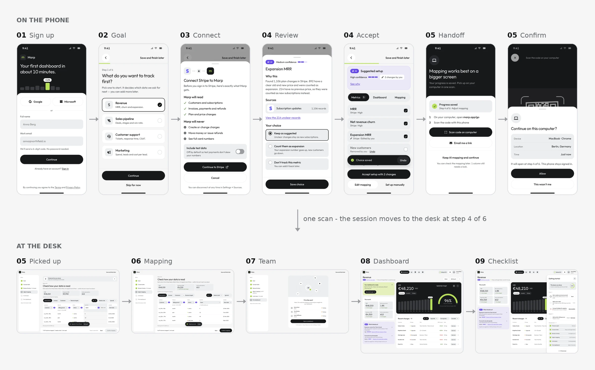
- Sign up with two fields and a code from Mail
- Choose what to track first
- Read what Marp can touch, then connect Stripe
- Question the AI's setup, change two things, accept it
- Move to the desk in one scan and one confirmation
- Check how each column is read, and what it changes
- Invite the team - or don't
- Open the first dashboard
- Pick up the rest when ready
- When something breaks, a way forward on every error
Where each step lives
| Step | Phone | Desktop |
|---|---|---|
| Sign up and goal | Yes | Yes |
| Connect a source | Yes | Yes |
| Review AI setup | Yes | Yes |
| Handoff | Scan and confirm | Scan page |
| Adjust mapping | Skippable | Yes |
| Invite team | Yes | Yes |
| First dashboard | Yes | Yes |
| Checklist | Bottom sheet | Side panel |
| Errors | Yes | Yes |
The phone starts it. The desk checks it. The dashboard proves it.